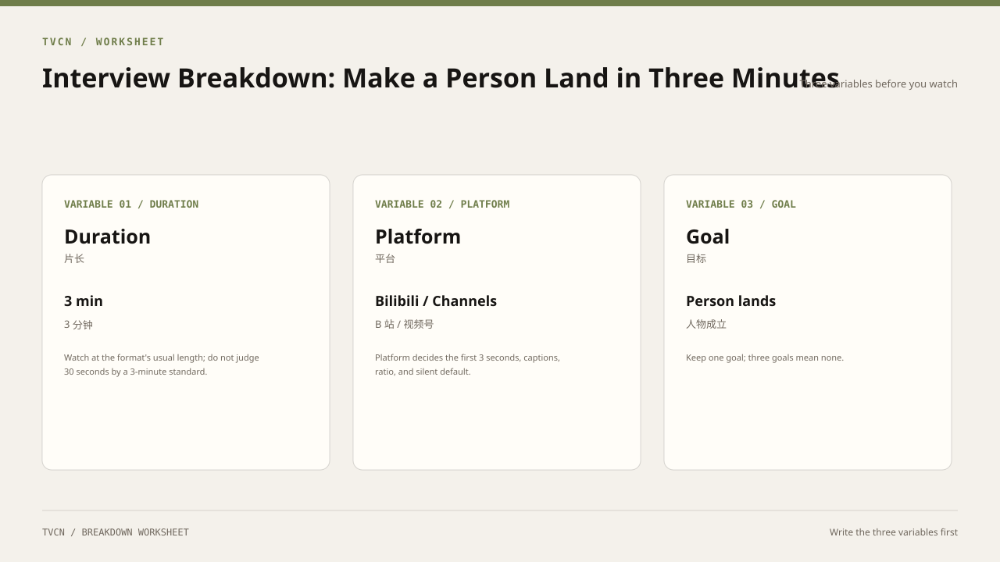

Fix Three Variables First
Fix three variables: three minutes, Bilibili/Channels, and the goal is the person stands on their own, not the host finishing questions. The trap is talking heads; count shots of the person working, not questions.
Sample note: the timecodes below are a teaching sample for this format's usual length. They do not correspond to one specific film and are not frame-accurate analysis. Use the same positions on your own film; do not treat these beats as the only answer.
Timecode Breakdown: 9 Beats
Watch in order; do not read commentary first. For each beat record four things: picture, sound, job, and steal or do-not-copy.
- 0:00–0:08 | Picture: the person is already speaking; first line is an answer/conflict. Sound: sync. Job: hook first, no introduction. Steal: start mid-answer. Do not copy: host intro.
- 0:08–0:25 | Picture: the person works/walks/operates; interview continues. Sound: action plus interview. Job: give the person a body, not just a face. Steal: cover interview with work. Do not copy: cut faces throughout.
- 0:25–0:50 | Picture: question one, but keep the answer, not the question. Sound: answer. Job: let viewers listen to the person, not the reporter. Steal: cut the question. Do not copy: keep “what do you think.”
- 0:50–1:15 | Picture: evidence: hands, object, document, place. Sound: action. Job: make the claim verifiable. Steal: one touchable proof. Do not copy: repeat the answer in captions.
- 1:15–1:40 | Picture: question two; the answer contradicts or changes. Sound: answer slows/pauses. Job: give the person layers. Steal: keep the pause. Do not copy: fill with music.
- 1:40–2:05 | Picture: turn: the person does something and the answer becomes a decision. Sound: action. Job: turn interview into event. Steal: let action interrupt. Do not copy: keep the answer seated.
- 2:05–2:30 | Picture: context: place/time/rules/what happened before. Sound: ambience. Job: give the personal story a world. Steal: three environmental details. Do not copy: narrate history.
- 2:30–2:50 | Picture: close: the person returns to work, no summary. Sound: action plus one answer. Job: end on the person. Steal: return to the opening action. Do not copy: host summarizes.
- 2:50–3:00 | Picture: hold: a face or empty frame. Sound: ambience. Job: let viewers judge. Steal: stop unfinished. Do not copy: caption “this is…”.
Read the Structure
The spine is answer, body, question, evidence, contradiction, turn, context, return, hold. Fewer questions make a stronger person; every answer needs visible evidence.
Ask only three questions: what proof arrives in the first ten seconds; whether every ten to fifteen seconds adds information; whether the end lands one action, one change, or one question. If any is missing, a 3 min film falls apart.
Three Variables Before You Watch

Budget Order of Magnitude
Budget is a rough mainland-China production range, excluding media spend; it is an order of magnitude, not a quote. At the same length, a stage, cast, effects, or music rights can each double the cost.
- Low: RMB 2,000–8,000, two people, one camera and one mic, one location, half a day.
- Mid: RMB 8,000–30,000, three to five people, two cameras, light, sound, one to two days.
- High: RMB 30,000–100,000+, director, camera, sound, art, multiple locations, three to five days.
Three Structures You Can Steal
Steal structure, not images. These three still work when you change the subject.
- Start mid-answer; cut the introduction.
- Cover interview with work; give the person a body.
- Keep one pause/contradiction for layers.
Three Reasons Not to Copy
Not “bad,” but built on different conditions; copying exposes your budget, platform, and audience.
- Do not copy host/guest alternating cuts: without work shots, it is radio.
- Do not copy quote mining: if every line is a quote, the person feels fake.
- Do not copy historical narration: context comes from environmental detail, not a lecture.
Breakdown Exercises
Do them before shooting; do not just read. Do the three in order, and the third must become a fifteen-second file.
- Watch muted; can the picture say what the person does?
- Count work shots versus talking-head cuts; if talking heads exceed half, recut.
- Compress to sixty seconds: answer, evidence, turn.
Image note. Covers, diagrams and step images on this page are editorial illustrations or structure diagrams, not photographs of a test performed here; they are not evidence of measured gear performance. Where an image is AI-assisted, the caption says so. Read the test conditions in the text before treating an image as proof.